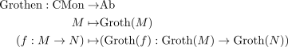
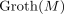
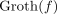
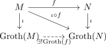

grothendieck group functor
1. Definition / Proposition
Gvien Category CMon and Category Ab, the grothendieck monoid functor is defined as functor

where

is the grothendieck group and
is the induced morphism